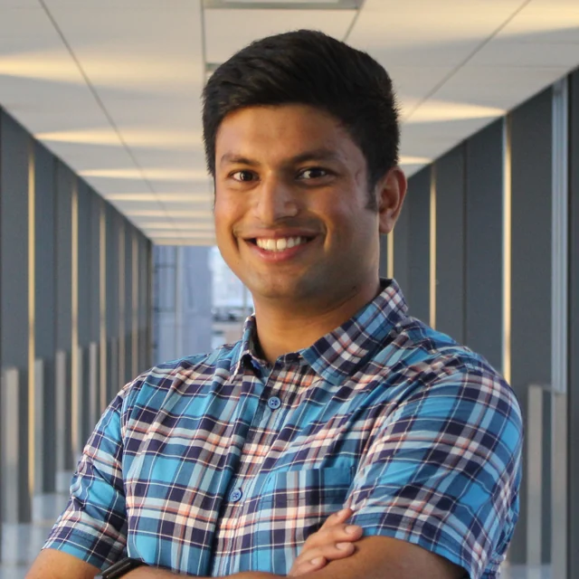
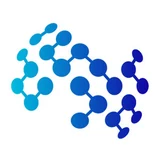
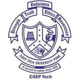

I'm Abhijith Sharma. I audit tool-using LLM agents.
I'm a PhD student in Machine Learning at MBZUAI in Abu Dhabi, advised by Salem Lahlou and Nils Lukas. I work on auditing, testing and verification of AI agents: training auditors that interrogate tool-using LLM agents the way real users would, and fuzzing multi-agent systems for the failures that only appear when agents, tools and memories interact.
Previously, I was a research associate at the University of Waterloo with AVL, where I built a real-time adversarial testing framework for autonomous vehicles under Sebastian Fischmeister and Nasser Azad. Before that I was a MITACS Accelerate intern at TrojAI, working on physical adversarial attacks and defenses for vision models under Apurva Narayan, which became my master's thesis at UBC.
I did my bachelor's at the College of Engineering, Pune, graduating with the gold medal, and spent three of those years on the control subsystem of COEP-SAT-2, a student satellite. There was also a short stint in decision analytics at ZS Associates.
Outside of work I play squash, swim, and read history.

Degrees

MBZUAIPhD, Machine Learning · 2025 – presentadvised by Salem Lahlou & Nils Lukas- University of British ColumbiaM.Sc., Computer Science · 2021 – 2023gpa 4.33 / 4.33 · thesis with Apurva Narayan & John Braun

College of Engineering, PuneB.Tech, Instrumentation & Control · 2016 – 2020gold medal · gpa 9.21 / 10
What I'm working on
- 01Learning to audit
Auditors that probe deployed agents like real users would, and surface policy violations hidden across turns and tool calls.
- 02Fuzz verification of multi-agent systems
Fuzzing for the failures that only appear when several agents, tools and memories interact.
- 03Diversity-seeking exploration
GFlowNets and RL objectives that find many distinct failure modes, not one worst case.
- 04Robustness & privacy
Physical adversarial patches, real-time AV testing (AVATAR), membership inference on spiking networks.
Now
Second year of the PhD at MBZUAI, Abu Dhabi. Presenting PROBE at NeurIPS 2026 and building the next auditor.
Papers I'd show you first
Things I reach for
Let's audit something together.
- Based in
- Abu Dhabi, UAE
Recent updates
Pune → Vancouver → Waterloo → Abu Dhabi
- 2020 – 2021ZS AssociatesDecision analytics associate. Pricing models for a US medical-device launch.
- 2021 – 2023TrojAI · UBCMITACS Accelerate intern. Physical adversarial attacks and defenses for vision models.
- 2023 – 2024University of WaterlooResearch associate with AVL. Real-time adversarial testing for autonomous vehicles.
- 2024 – nowMBZUAIResearch associate, then PhD. Auditing and verifying AI agents.
Code
When not auditing
Squash courts, long swims, and history books. I read about empires the way I read agent traces: looking for the turn where the rules stopped being followed.
speaks english · hindi · marathi